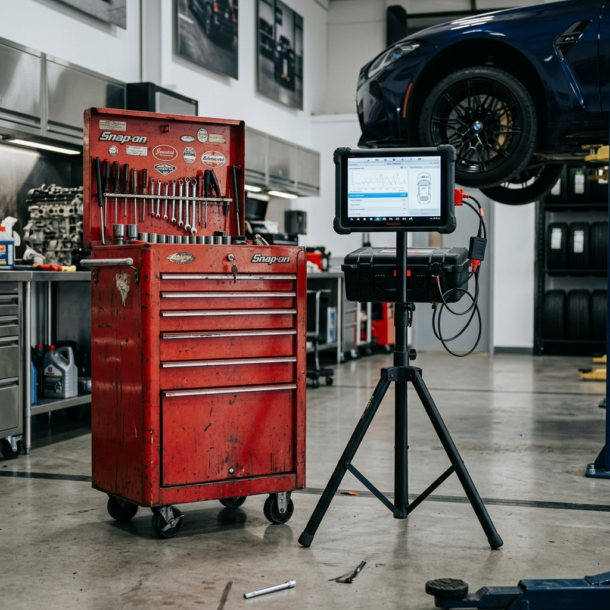
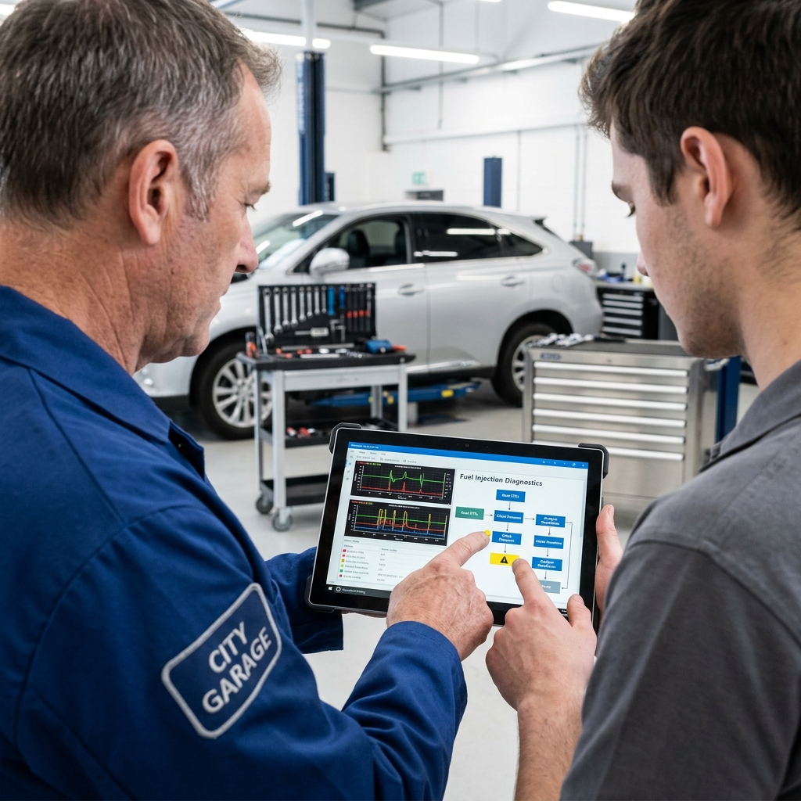

Tradition trifft Moderne
Du übernimmst einen etablierten Betrieb. Deine Herausforderung: Die wertvollen Stammkunden des Vorgängers nicht verschrecken, das Google-Profil sichern und gleichzeitig den Betrieb technisch ins 21. Jahrhundert holen.

Ein Betriebswechsel ist sensibel. Wir helfen dir, die hart erarbeiteten Google-Bewertungen sicher zu übernehmen, die alten Kunden an neue digitale Prozesse heranzuführen und dein Team auf die gemeinsame Reise in die Zukunft mitzunehmen.
Wir schauen gemeinsam auf die Übergangsphase, die für dich eh schon mit viel Arbeit und Stress verbunden ist.
Schritt für Schritt wieder sauber aufsetzen. Ein modernes Erscheinungsbild, das Vertrauen schafft.
Nicht sofort massiv und "klein klein", sondern bestehenden Kundenstamm nutzen und gezielt ergänzen.

Gezielte Entlastung
Bevor wir eine Zeile Code schreiben, schauen wir uns deinen Betrieb genau an. Wir analysieren gemeinsam, was in der Vergangenheit gut lief, wo eure Routinen liegen und welche Prozesse in Zukunft gezielt entlastet werden müssen.
Was funktioniert, bleibt. Wir stülpen euch kein Standard-Konzept über, sondern integrieren eure bewährten Abläufe.
Die Website wird zum digitalen Mitarbeiter, der Vorab-Infos einholt und das Telefon beruhigt.
Häufige Fragen zur Übernahme
Lass uns besprechen, wie wir deinen Inhaberwechsel digital flankieren, Stammkunden sichern und den Betrieb modernisieren.
Kostenloses Erstgespräch vereinbaren →